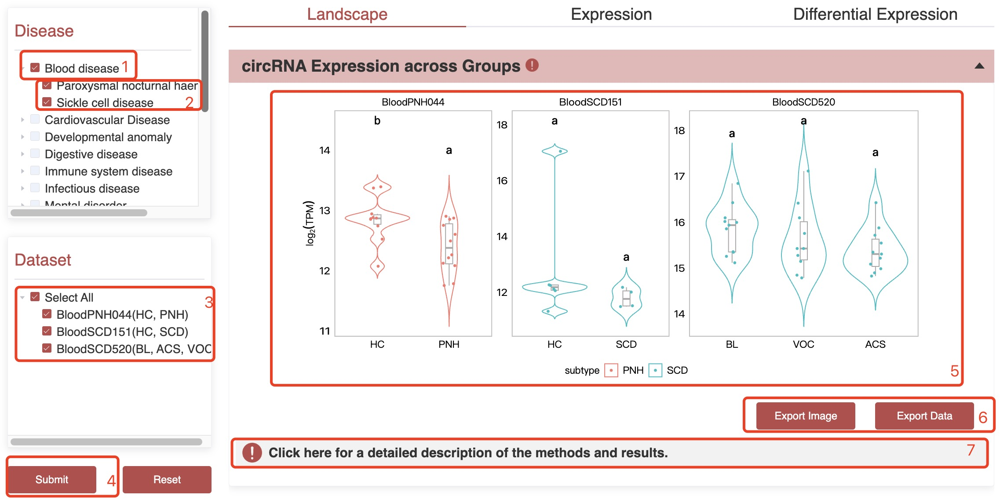
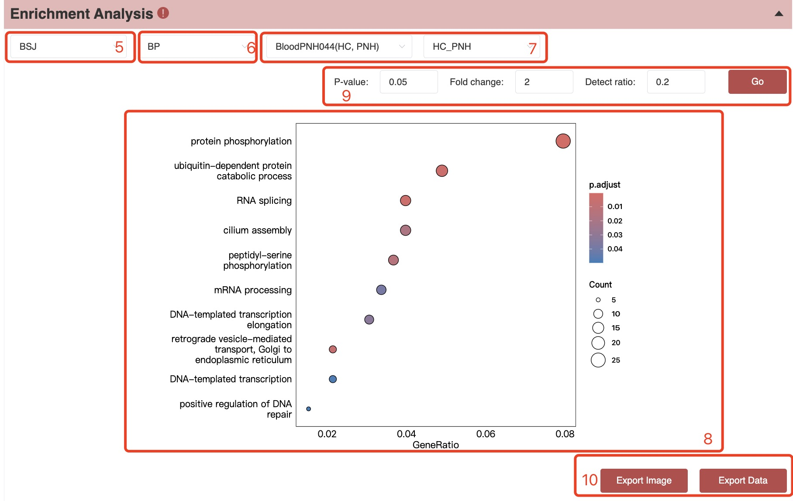
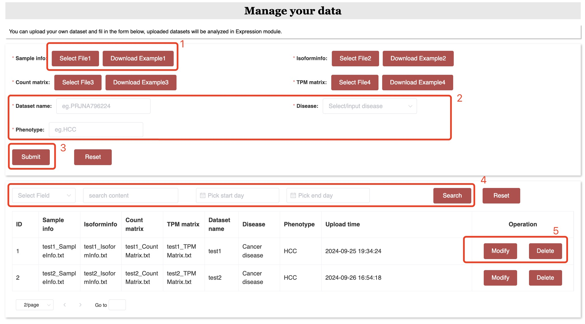

Resources
·Study / Dataset
BloodCircR offers a comprehensive collection of human blood transcriptome studies and datasets.
Users can filter studies by selecting different disease categories of interest.
Additionally, datasets can be filtered based on specific disease phenotypes and
sequencing platforms. The number in parentheses next to each phenotype name indicates the total number of samples associated with that phenotype.
circRNAs
·Browse circRNA
Users can browse all circRNAs or filter by specific conditions to search for circRNAs of interest. Detailed information for each circRNA
can be assessed by clicking on its BloodCircR ID.
·Standardized Naming
CircRNAs are named according to the order of their circular exons, with an appended numerical ID to distinguish circRNAs that share the same exon annotation
(Chen et al. Nature Cell Biology 2023).
·Advanced Search
Users can search for circRNAs in BloodCircR by various identifiers, including BloodCircR ID, host gene,
Ensemble ID, BSJ ID, Uniform ID, Dataset ID and chromosome position.
·General information
Users can view detailed information about a specific circRNA, including its Uniform ID, BSJ ID, chromosome, strand, start and end positions,
type, host gene, Ensemble ID, genomic length, spliced sequence length, isoform state, source, and confidence level.
1.Clicking on the host gene will direct the GeneCards website.
2.Cliking on the ‘Full’ link will lead to the supporting evidence module.
·Structure
Users can explore the sequence, exons, and exon positions of a specific circRNA. Additionally, clicking on an exon will display its sequence.

·Alias for circRNA
BloodCircR provides alternate circRNA IDs from different databases. Users can click on these IDs to be redirected to corresponding databases.
·Supporting evidence
Users can select different samples from various datasets to view visualization plots in circRNA reconstruction.
·Functions
RBP Binding: Users can explore RBPs predicted to bind a specific circRNA using the RBPmap tool.
miRNA Binding: Users can explore miRNAs predicted to bind a specific circRNA using the TargetScan tool.

Regulatory network: Users can view the regulatory network involving a circRNA, RBPs, miRNAs, mRNA, or protein-protein interactions of host genes,
as well as the results of enrichment analyses.
Protein-protein interaction network: Users can explore the protein-protein interaction network of host genes and predicted binding genes, as well as the results of enrichment analyses..
·Expression
BloodCircR provides circRNA and host gene expression profiles across 16 disease categories. In addition to expression abundance, the platform displays the junction ratio at the BSJ site for each circRNA,
enabling exploration of the splicing strength of back-splicing events.

Expressions
·circRNA Expression across Groups
Users can view the expression (TPM) of circRNAs across groups in human diseases or phenotypes.

1. Choose at least one disease type;
2. Select at least one phenotype.
3. Choose at least one dataset.
4. Submit your selections.
5. View the chart generated from all selected datasets or from a single dataset.
6. Export the image or data if needed.
7. Click for a detailed description of methods and results.
2. Select at least one phenotype.
3. Choose at least one dataset.
4. Submit your selections.
5. View the chart generated from all selected datasets or from a single dataset.
6. Export the image or data if needed.
7. Click for a detailed description of methods and results.
·Isoform / BSJ / Gene Expression Analysis
Users can view circRNA expression (TPM) across groups at the isoform, BSJ, or gene level in human diseases or phenotypes.
1. Select at least one disease type.
2. Select at least one phenotype.
3. Choose at least one dataset.
4. Submit your selections.
5. Select isoform, BSJ, or host gene level for analysis.
6. Press the Tab key to fill in isoforms/BSJs/genes in the selected samples, or enter the isoforms/BSJs/genes of interest, then click the Submit button.
7. View the plot generated from all selected datasets or from a single dataset.
8. Select one of the inputted isoforms/BSJs/genes to view the plot and submit your choice.
9. Export the image or data if needed.
2. Select at least one phenotype.
3. Choose at least one dataset.
4. Submit your selections.
5. Select isoform, BSJ, or host gene level for analysis.
6. Press the Tab key to fill in isoforms/BSJs/genes in the selected samples, or enter the isoforms/BSJs/genes of interest, then click the Submit button.
7. View the plot generated from all selected datasets or from a single dataset.
8. Select one of the inputted isoforms/BSJs/genes to view the plot and submit your choice.
9. Export the image or data if needed.
·Differential Expression
Users can view differential expression across groups in human diseases or phenotypes at the isoform, BSJ, or gene level.
1. Select at least one disease type.
2. Select at least one phenotype.
3. Choose at least one dataset.
4. Submit your selections.
5. Select the isoform, BSJ, or gene level.
6. Select one of comparisons.
7. View the plot generated from one of the selected datasets and comparisons.
8. Adjust P-value and fold-change parameters to regenerate the plot.
9. Export the image or data if needed.
2. Select at least one phenotype.
3. Choose at least one dataset.
4. Submit your selections.
5. Select the isoform, BSJ, or gene level.
6. Select one of comparisons.
7. View the plot generated from one of the selected datasets and comparisons.
8. Adjust P-value and fold-change parameters to regenerate the plot.
9. Export the image or data if needed.
·Enrichment analysis
Users can assess enrichment analysis results for GO, KEGG, Reactome pathways and Hallmark gene sets across groups at the isoform, BSJ, or gene level.

1. Select at least one disease type.
2. Select at least one phenotype.
3. Choose at least one dataset.
4. Submit your selections.
5. Select isoform, BSJ, or gene level.
6. Choose one of the following categories to view enrichment analysis results: Biological Process (BP), Cellular Component (CC), Molecular Function (MF), Reactome pathway, or Gene Set Enrichment Analysis (GSEA).
7. Select one of comparisons.
8.View the plot generated from one of the selected datasets and comparisons.
9. Adjust the P-value and fold-change parameters to examine up-regulated and down-regulated genes.
10. Export the image or data if needed.
2. Select at least one phenotype.
3. Choose at least one dataset.
4. Submit your selections.
5. Select isoform, BSJ, or gene level.
6. Choose one of the following categories to view enrichment analysis results: Biological Process (BP), Cellular Component (CC), Molecular Function (MF), Reactome pathway, or Gene Set Enrichment Analysis (GSEA).
7. Select one of comparisons.
8.View the plot generated from one of the selected datasets and comparisons.
9. Adjust the P-value and fold-change parameters to examine up-regulated and down-regulated genes.
10. Export the image or data if needed.
·Differential Expression Comparison
Users can view circRNA expression (TPM) vs mRNA expression across group in human diseases or phenotypes.

1. Select at least one disease type.
2. Select at least one phenotype.
3. Choose at least one dataset.
4. Submit your selections.
5. Select one of comparisons.
6. View the plot generated from one of the selected datasets and comparison.
7. Adjust P-value and fold-change parameters to regenerate the plot.
8. Export the image or data if needed.
2. Select at least one phenotype.
3. Choose at least one dataset.
4. Submit your selections.
5. Select one of comparisons.
6. View the plot generated from one of the selected datasets and comparison.
7. Adjust P-value and fold-change parameters to regenerate the plot.
8. Export the image or data if needed.
·Enrichment analysis (circular versus linear transcripts))
Users can compare enrichment analysis results for GO, KEGG, Reactome pathways and Hallmark gene sets between circular and linear transcripts.
1. Select at least one disease type.
2. Select at least one phenotype.
3. Choose at least one dataset.
4. Submit your selections.
5. Select one of comparisons.
6. Choose one of the following categories to view enrichment analysis results: Biological Process (BP), Cellular Component (CC), Molecular Function (MF), Reactome pathway, or Gene Set Enrichment Analysis (GSEA).
7. View the plot generated from one of the selected datasets and comparison.
8. Adjust the parameters to regenerate the enrichment analysis results.
9. Export the image or data if needed.
2. Select at least one phenotype.
3. Choose at least one dataset.
4. Submit your selections.
5. Select one of comparisons.
6. Choose one of the following categories to view enrichment analysis results: Biological Process (BP), Cellular Component (CC), Molecular Function (MF), Reactome pathway, or Gene Set Enrichment Analysis (GSEA).
7. View the plot generated from one of the selected datasets and comparison.
8. Adjust the parameters to regenerate the enrichment analysis results.
9. Export the image or data if needed.
Pipeline
·AQUARIUM_HB
Click on the AQUARIUM_HB link to navigate to the GitHub page. The GitHub page contains the necessary data processing workflows and code.
Server
·Manage Data
Users can upload their own dataset and fill in the form. Uploaded datasets will be analyzed in Expression module.

1. Upload datasets or download the example directly.
2. Complete the form.
3. Submit the form.
4. Search the uploaded datasets by content or time.
5. Modify or delete the uploaded datasets.
2. Complete the form.
3. Submit the form.
4. Search the uploaded datasets by content or time.
5. Modify or delete the uploaded datasets.
·Manage Account
Users can update personal details and change the account password by filling out the form.